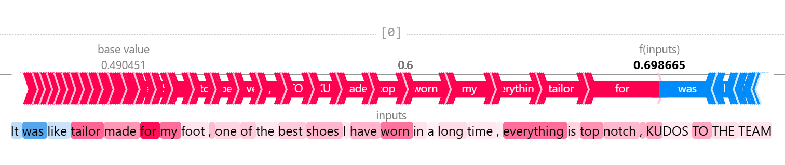
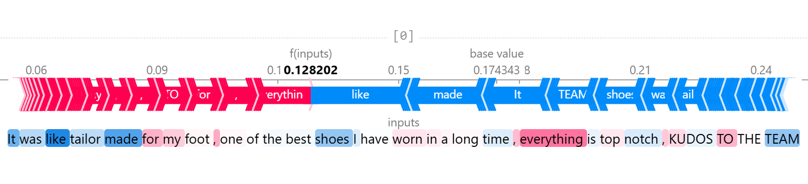

2024–2025
Dataset details and other specifics are omitted. Results and methodology are shared at a level consistent with academic disclosure.
TL;DR
I built a two-stage Sentence-BERT pipeline to detect Schwartz human values in sustainable consumer reviews, achieving nearly a 3 time improvement in the F1 of standard LIWC lexical baselines (0.675 vs. 0.243), including resolving values where LIWC produced no signal at all. One important takeaway was that competing models with identical F1 scores had fundamentally different internal reasoning, and only some aligned with human semantic reasoning. I used SHAP first to select the right architecture on this basis, and then again to verify the final model had not learned spurious correlations during domain adaptation. The core insight is in low-resource social science NLP, a model that scores well for the wrong reasons is not a model you can trust.
This project aims to detect the 10 Schwartz basic human values in sustainable product consumption reviews from the Indian market. Human value detection in consumer text is a non-trivial NLP task: values are expressed implicitly, depend on context rather than just vocabulary, and are highly subjective. Popular approaches in business and marketing research rely on LIWC lexical dictionaries, which match fixed word lists and do not account for implicit expression. This project also addresses the problems of working in low-resource setting and the need for interpretability embedding-based models. The solution is a two-stage Sentence-BERT fine-tuning pipeline with SHAP-based interpretability testing used both to select the final architecture and to verify the reasoning of the deployed model.
Two datasets were used:
ValueNet (~9,000 sentences, 3-class Schwartz annotation) for general value pre-training.
A small set of expert-annotated consumer reviews (45 reviews) across sustainable product categories in the Indian market, labelled by five domain experts across all 10 Schwartz values.
Expert annotation was chosen over crowdsourcing because Schwartz value judgements require contextual reasoning.
A two-stage fine-tuning approach was used to make the most of limited labelled data:
Stage 1 — General value learning
all-mpnet-base-v2 fine-tuned on ValueNet. Lower transformer layers frozen and only the top 2 encoder layers updated.
Stage 2 — Domain adaptation
Stage 1 model further fine-tuned on the expert reviews, augmented approx. 3 times via truncation and word dropout. Evaluated via stratified 5-fold cross-validation, given the dataset size.
Scoring
Four semantically distinct anchor definitions per value were encoded and averaged into a reference embedding. Cosine similarity to this anchor with an optimised threshold determines the prediction.
Standard metrics were insufficient on their own. SHAP was used in two distinct roles:
Different loss variants produced identical F1 = 0.80 on a target value. SHAP token attributions revealed that some models attended to grammatical fillers like articles, conjunctions, punctuation with no semantic content. The ContrastiveLoss model consistently attended to value-relevant tokens aligned with human judgement. ContrastiveLoss was selected on the basis of reasoning quality, not metric performance.


Fig. 2 — SHAP attributions
After Stage 2 domain adaptation, SHAP was applied again to confirm the final model had not reintroduced spurious patterns on the small expert dataset. It confirmed semantically grounded reasoning was preserved across both positive and negative examples.
Mean F1 across all 10 Schwartz values:
| Model | Mean F1 |
|---|---|
| LIWC Baseline | 0.243 |
| Zero-shot (multi-anchor) | 0.313 |
| Stage 1 — ValueNet only | 0.587 |
| Stage 2 — +Expert domain adaptation | 0.675 |
The two-stage pipeline achieves almost 3 times the F1 of LIWC. For several implicit values, where expressing a construct like Power or Conformity in a product review requires contextual reading rather than keyword matching, LIWC scored F1 = 0.00. The embedding model resolved all of them.
| Value | LIWC F1 | Stage 2 F1 |
|---|---|---|
| Achievement | 0.326 | 0.794 |
| Benevolence | 0.571 | 0.826 |
| Conformity | 0.118 | 0.585 |
When competing models produce identical benchmark scores, standard evaluation cannot distinguish them. SHAP revealed that a model can score well by attending to grammatical noise rather than semantic content which is a failure mode that no classification metric detects. For low-resource settings, interpretability auditing is a necessary complement to quantitative evaluation, not an optional add-on.